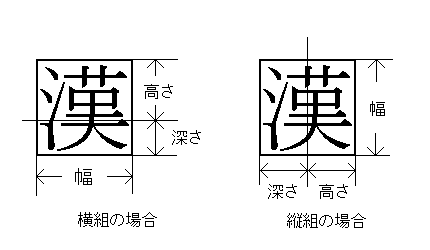

zh
exと同じようにカレントフォントが持つ高さ+深さを示す単位記号です。 ただし、カレント和文フォントを参照します。 また、縦組ボックスの内部ではカレントの縦組フォント、 横組ボックスの内部ではカレントの横組フォントの高さ+深さを参照します。
縦組フォントと横組フォントでは、`高さ'と`深さ'を示す位置が異なることに注意してください。

関連事項
zw
[pTeX home page]
.
[プリミティブの目次]